Set up the CryptoX Concordium Wallet#
The CryptoX Concordium Wallet is a digital wallet that enables you to create and manage your Concordium identities and accounts and to create transactions such as sending CCD, shielding and unshielding CCD, and sending shielded transactions.
To learn more about identities and accounts, see identities and accounts.
Read the following guide to learn how to set up the wallet.
Get started#
Install the CryptoX Concordium Wallet on an Android or iOS phone. See Downloads.
Open the CryptoX Concordium Wallet. Read and accept the Terms and Conditions. Tap Get started.
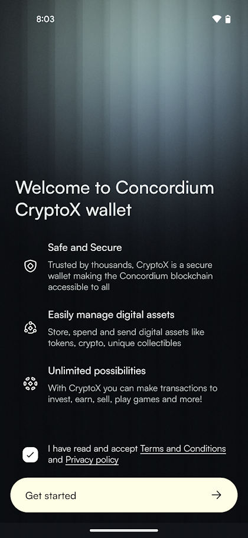Decide whether or not to allow activity tracking. This tracking only applies to the general app usage, not funds, transactions or any personal data.
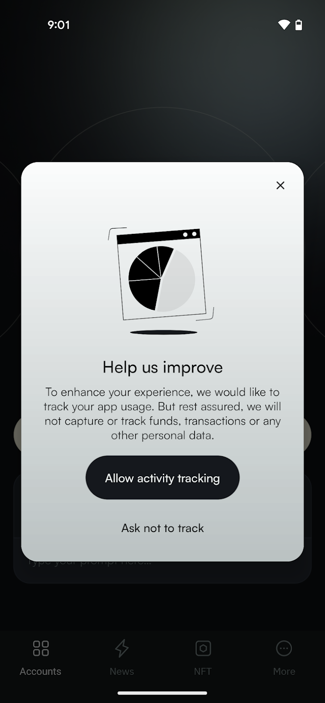Tap Activate Account.
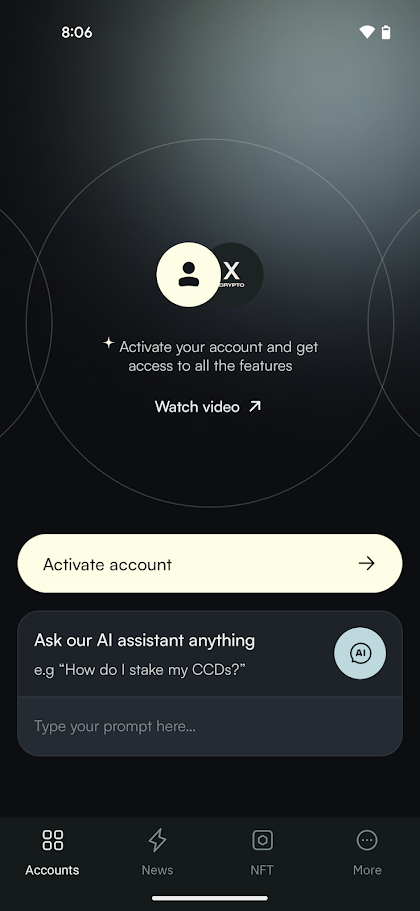Tap Create wallet.
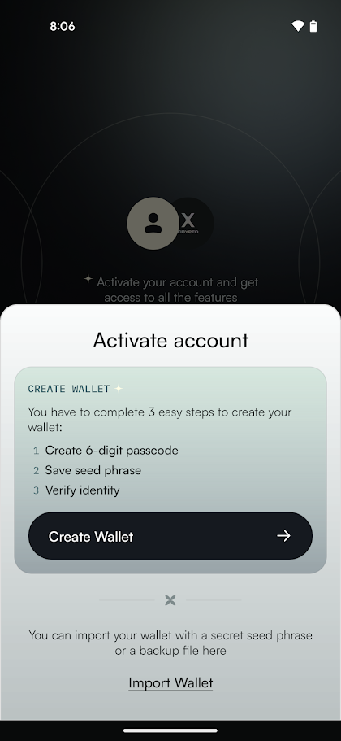Create a six-digit passcode or use a full password. Repeat passcode or password.
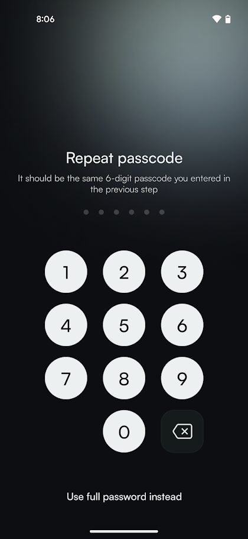Now you see your seed phrase which is the access key to all the funds in your wallet.
You can either write it down, make a digital copy, or take a screenshot of it. In either case, make sure to keep it somewhere safe in case you need to recover your wallet.
When done, check the confirmation box and tap Continue.
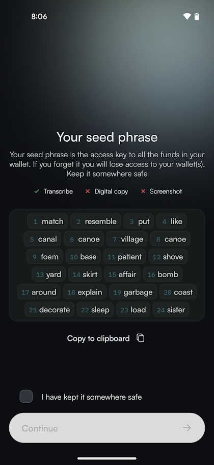Now you must submit a request for an identity verification. Select an identity provider.
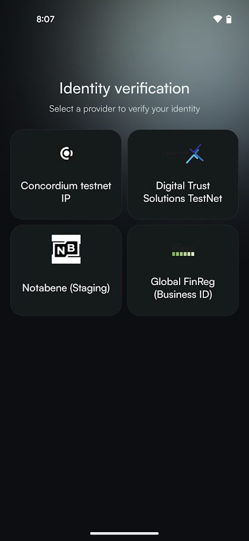Enter your passcode or password when prompted. An external web page opens within the app.
Enter the information requested by the third-party identity provider. The information might vary depending on the identity provider. However, they will ask you to provide photos of identification documents and a selfie.
When you have submitted the information to the identity provider, the verification or rejection is usually retrieved from the identity provider within minutes, but check your app frequently to retrieve the result. The result can be retrieved for up to seven days.
If your identity request is rejected, you see a message. Tap Make new identity request to create a new identity request. You can choose another identity provider.
Once the identity provider has approved your verification request, you can create your first account.
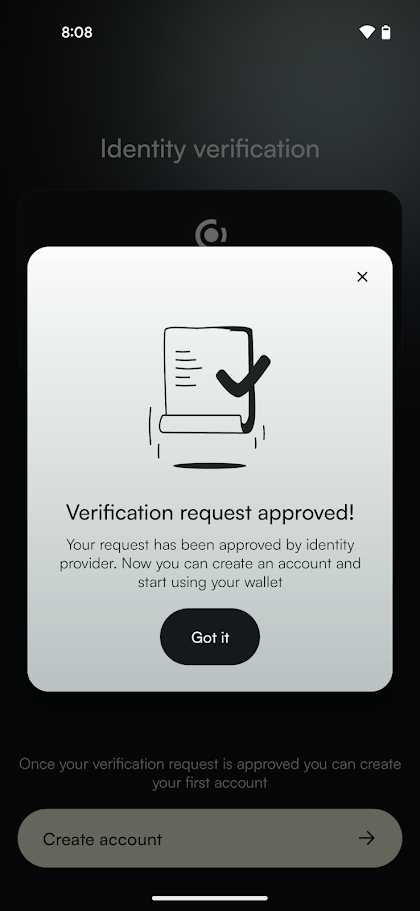Tap Create account and enter your passcode or password when prompted.
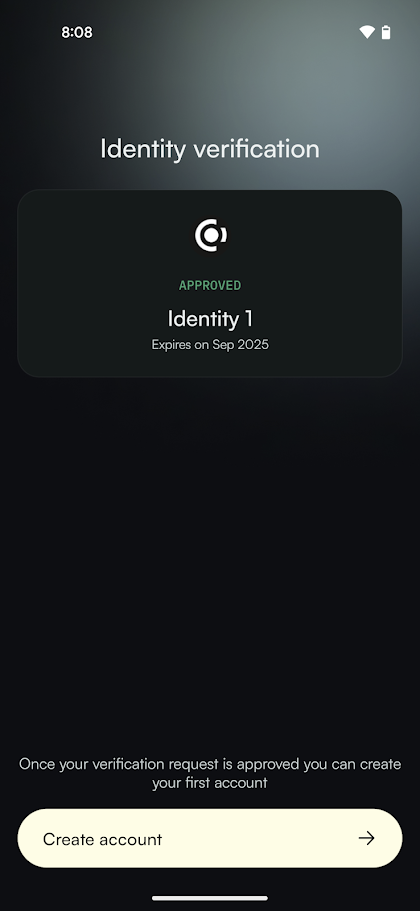Your new account will be visible in the Accounts list.
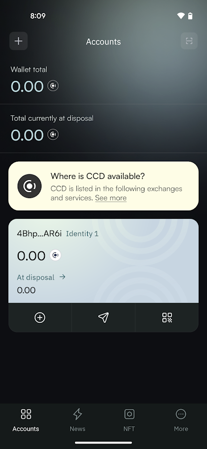
If you want to, you can change the name of the account.
Basic navigation#
In the wallet you have some navigation options.
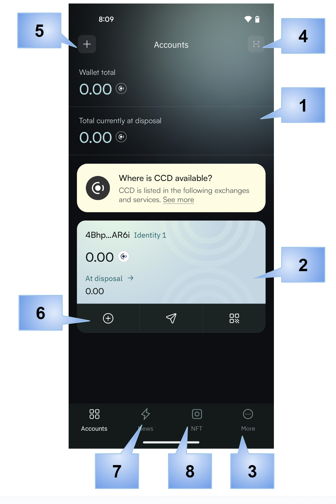Balances: shows total balances of all accounts.
Account: shows the identity on which the account was created, and totals.
More screen: contains actions for the wallet.
Scan QR code: tap to scan a QR code to connect to a dApp.
Add: to add a new account.
Account actions: range of actions you can perform on the account, such as send and receive.
Shortcut to Concordium News.
NFT administration.
More screen#
In the More screen you have the following options.
Identities: view all identities in the wallet and details of the identities, edit identity names, and create new identities.
Address book: manage your address book.
Recovery: recover your wallet.
Show my seed phrase: show my seed phrase
Update passcode and biometrics: change your wallet passcode or activate biometrics.
In case you have created your wallet from a backup file, you will not have the Recovery and Show my seed phrase options, but instead the options Import and Export.
Account navigation#
When you tap an account, you see the details for the specific account, including balances and transactions.
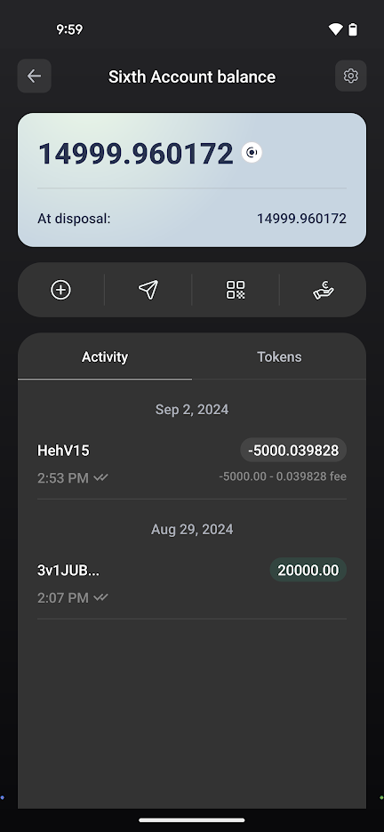The toolbar contains actions that can be performed on the account:
Send: send funds
Receive: find and share your address
Earn: configure and manage validation or delegation
Account settings: To perform less often used actions on an account tap

Transfer filters: configure filters to show or hide rewards
Release schedule: inspect a release schedule
Export private key: export your private key for testing smart contracts, for example
Export transaction logs: export transaction logs
Change account name: customize account names

{kind=link}
{kind=link}
{kind=link}
{kind=link}
{kind=link}
{kind=link}
{kind=link}
{kind=link}
{kind=link}
{kind=link}
{kind=link}
{kind=link}
{kind=link}